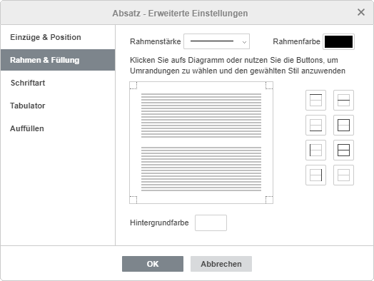
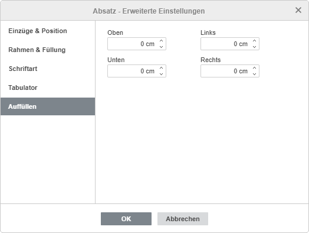
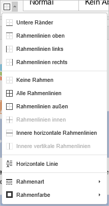

Rahmen hinzufügen
Rahmen hinzufügen
Um Rahmen zu einem Absatz, einer Seite oder dem gesamten Dokument im Dokumenteneditor hinzuzufügen:
- Positionieren Sie den Cursor innerhalb des gewünschten Absatzes oder wählen Sie mehrere Absätze mit der Maus aus oder markieren Sie den gesamten Text mithilfe der Tastenkombination Strg+A.
- Klicken Sie mit der rechten Maustaste und wählen Sie im Kontextmenü die Option Absatz - Erweiterte Einstellungen aus oder nutzen Sie die Verknüpfung Erweiterte Einstellungen anzeigen in der rechten Seitenleiste.
- Wechseln Sie nun im Fenster Absatz - Erweiterte Einstellungen in die Registerkarte Rahmen & Füllung.
- Geben Sie den gewünschten Wert für die Rahmenstärke an und wählen Sie eine Rahmenfarbe aus.
- Klicken Sie jedoch in das verfügbare Diagramm oder gestalten Sie Ihre Ränder über die entsprechenden Schaltflächen.
- Klicken Sie auf OK.

Nach dem Hinzufügen von Rahmen können Sie die Innenabstände festlegen, d.h. den Abstand zwischen den rechten, linken, oberen und unteren Rahmen und dem darin befindlichen Text.
Um die gewünschten Werte einzustellen, wechseln Sie im Fenster Absatz - Erweiterte Einstellungen in die Registerkarte Auffüllen:

Horizontale Linie einfügen
Um eine horizontale Linie an der aktuellen Cursorposition einzufügen:
- Platzieren Sie den Cursor dort, wo die horizontale Linie eingefügt werden soll.
- Wechseln Sie zur Registerkarte Startseite in der oberen Symbolleiste.
- Klicken Sie auf das Symbol Rahmen.
- Wählen Sie die Option Horizontale Linie aus der Dropdown-Liste.
